CH13-004 — images
【断り方】行きたくない誘いは“これ”で終わる｜角を立てずに切る
ep
CH13
Script Viewer
snapshot
guide
script
audio
thumb
images
CH13-004
images
updated_at: 2026-01-12T10:15:07.743046Z
run_id:
CH13-004_redo3_schnell_20260102_101917
CH13-004
頼まれると言ってしまう苦しみ／心に起きていること／苦しみの…
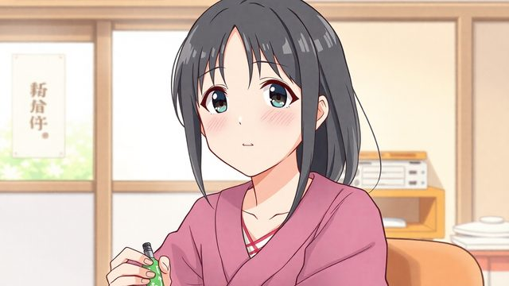
CH13-004
断れず承諾し自己責め
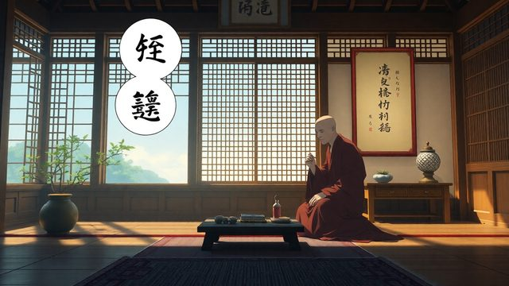
CH13-004
期待の反射が本音を上書き
CH13-004
反射に流される心／苦しみの正体は執着
CH13-004
思いやりが苦しみに変わる／日常の頼みごとで反射
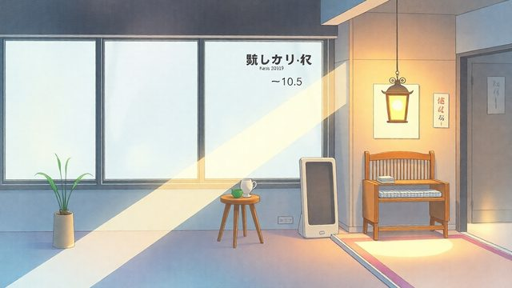
CH13-004
反射の奥の期待や恐れ／断る行為の捉え直し
CH13-004
断るときのざわつき／本当の誠実さとは／禅の視点の誠実さ
CH13-004
無理な承諾の代償
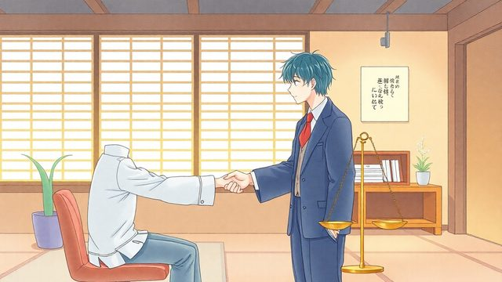
CH13-004
誠実な境界線を伝える
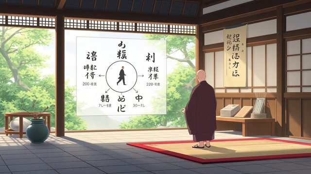
CH13-004
境界線とは何か／明確な線のメリット
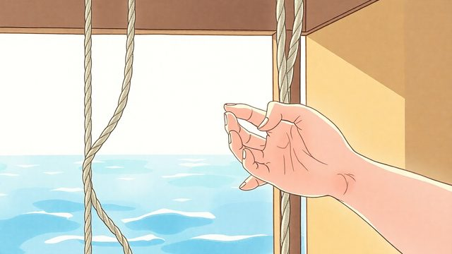
CH13-004
禅の執着手放し／執着が苦しみを生む
CH13-004
断ることは執着から解放／心の置き場所の変え方
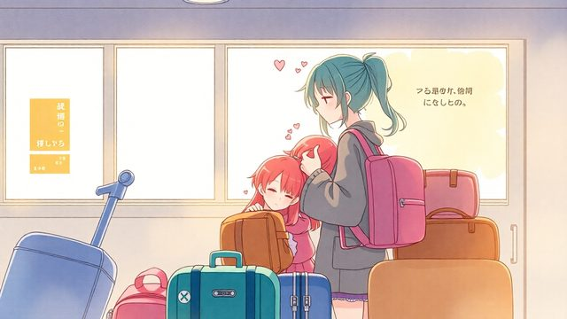
CH13-004
心が他人の荷物でいっぱい／心に玄関を作る知恵／物理的な玄関…
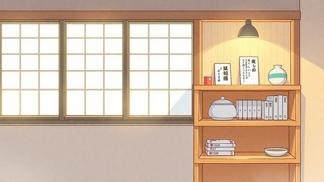
CH13-004
心の玄関への応用／週末の誘いの例／一呼吸置くイメージ
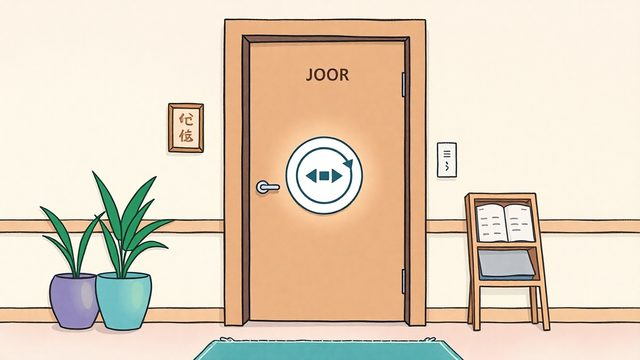
CH13-004
玄関に置く選択肢／余白が生む選択／反射ではなく選ぶこと
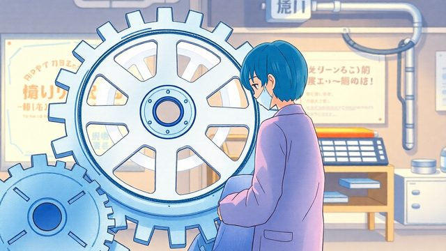
CH13-004
自動回路を遅らせる練習／肩の力を抜いて考える／全てを背負い…
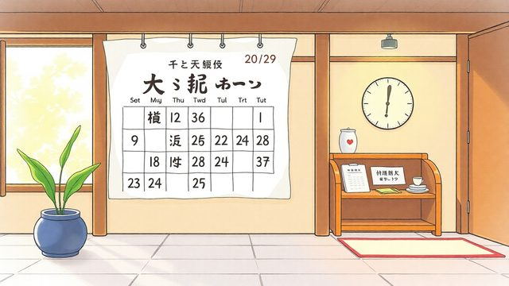
CH13-004
今日からできる習慣／優しく手放す言葉／長い理由を並べる傾向
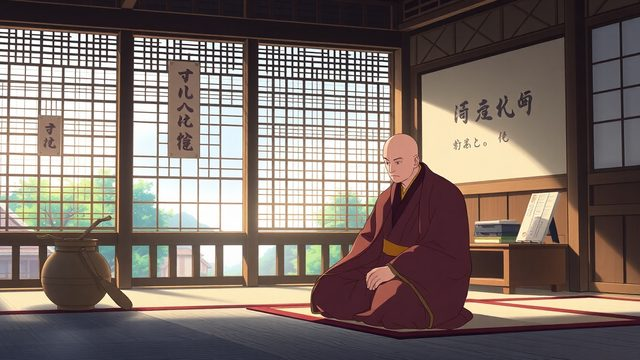
CH13-004
理由が反論材料になる
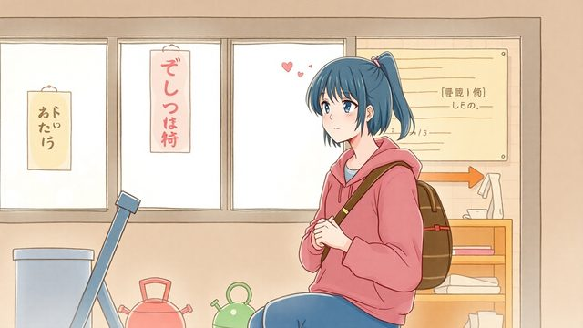
CH13-004
理由作りが心理的負担／鍵は簡潔な意思伝達
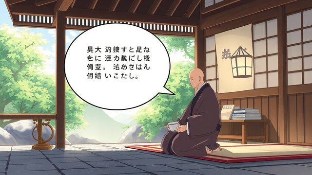
CH13-004
短い言葉で選択を示す／具体的な型の紹介
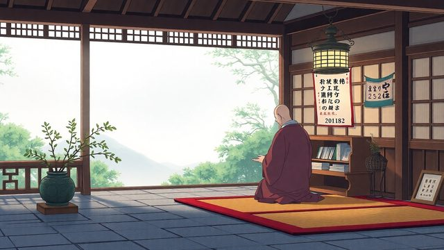
CH13-004
一言の要素分析／流れを切るでも／生活場面での使用例
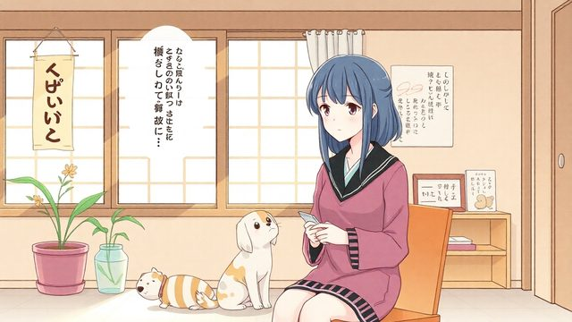
CH13-004
ペット世話の断り例／理由を並べる必要なし
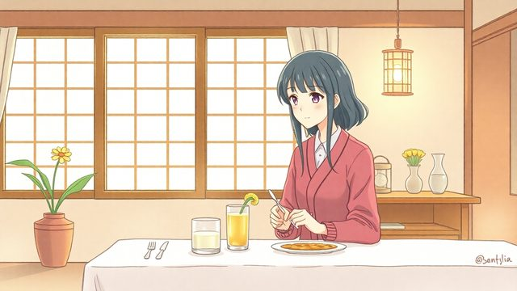
CH13-004
家族食事会の断り例／無理参加の不満蓄積／参加しない選択のメ…
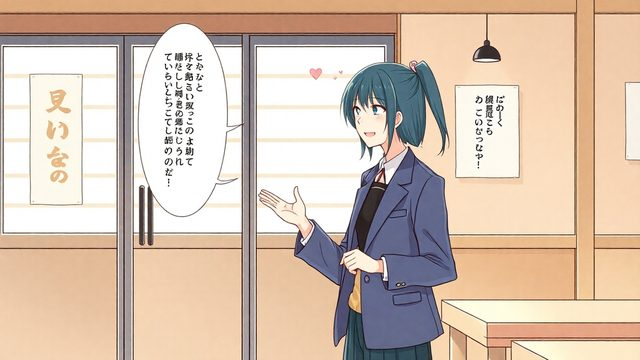
CH13-004
嫌味への対応例／会話からそっと降りる／型の応用可能性
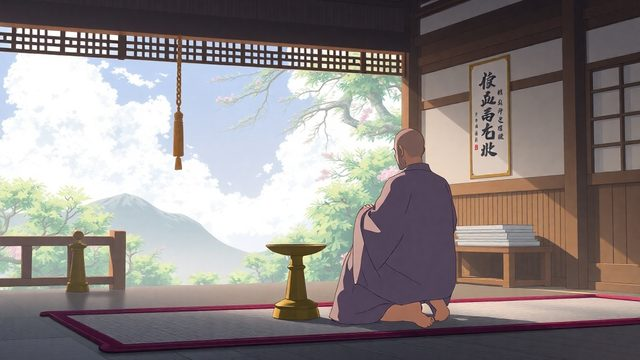
CH13-004
言い訳を並べない理由／自分を尊重する意思伝達
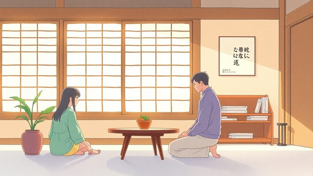
CH13-004
健全な関係の土台／心理的負担の軽減
CH13-004
食い下がられた時の対応
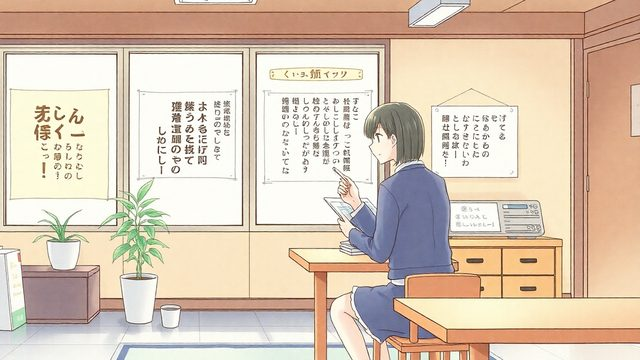
CH13-004
繰り返しが苦しみを生む／説得戦いのエスカレート／疲れるだけ…
CH13-004
優しい繰り返しの実践／沈黙の生まれる瞬間
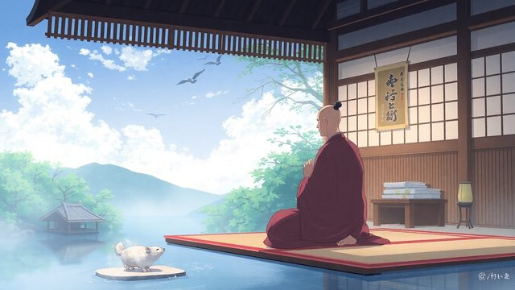
CH13-004
沈黙を恐れない理由
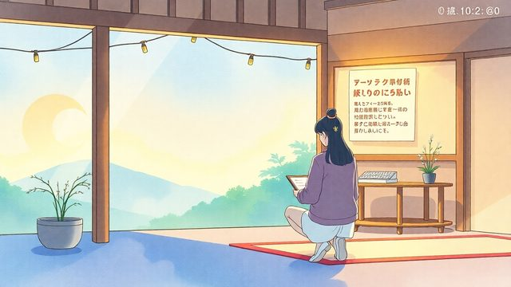
CH13-004
ブレない心の軸／呼吸を整え境界線提示／技術の目的は自己主張
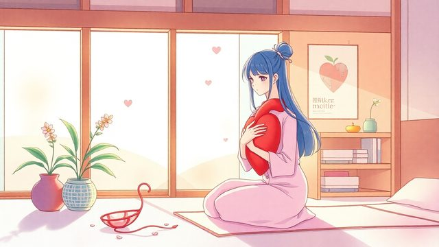
CH13-004
自分を大切にする実感／現代のストレス源への対応
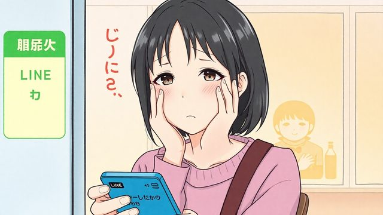
CH13-004
LINE通知への反射
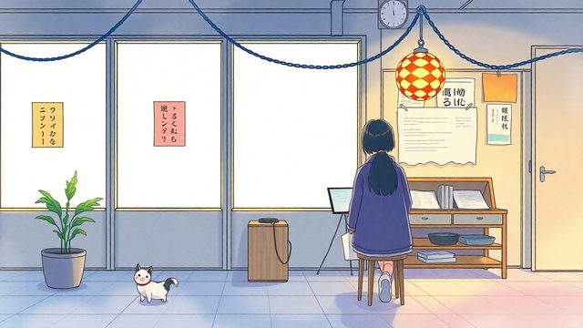
CH13-004
義務感の鎖／苦しみの正体は関わり方
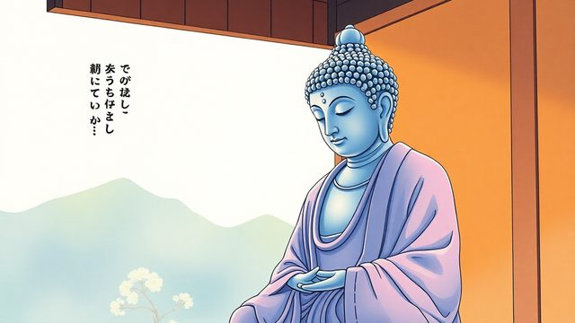
CH13-004
ブッダの視点の苦しみ／自動的な流れの速さ
CH13-004
反射的な思いに振り回される／既読と返信の分離
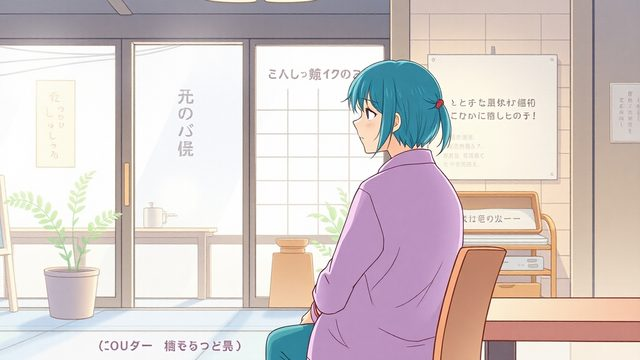
CH13-004
自分のペースで応える権利／心に余白を作る
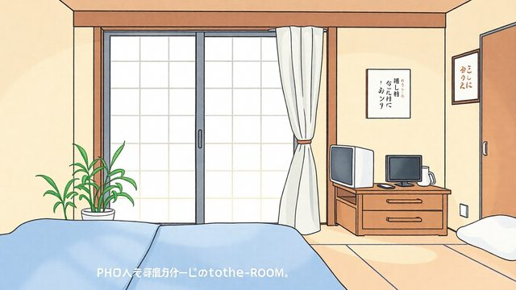
CH13-004
スマートフォンとの距離／小さな習慣が境界線練習
CH13-004
通知音への選択的対応
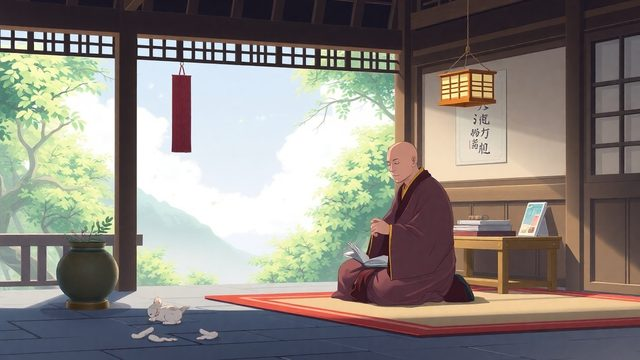
CH13-004
角を立てない線引きの言葉／テクノロジーと心の主導権
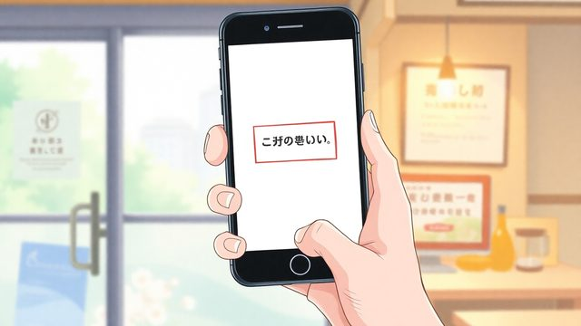
CH13-004
道具は意思で使う／鎖が緩み始める
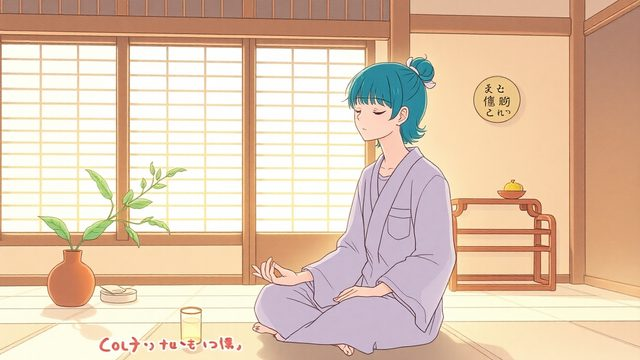
CH13-004
心の在り方を育てる練習／一日の始まりと終わりの練習
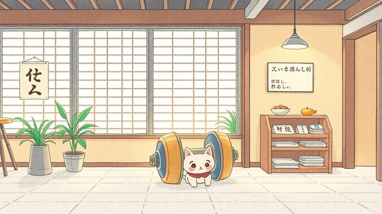
CH13-004
小さな習慣が心の筋トレ／朝と夜の練習紹介／朝の一言唱える／…
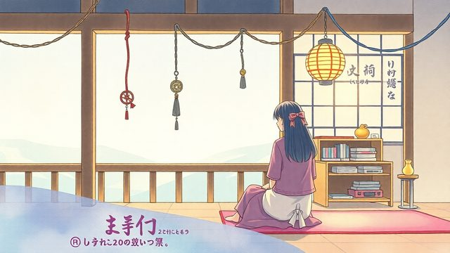
CH13-004
自動的緊張をほどく／一日の流れが軽やかに／夜の振り返り
CH13-004
執着が生まれる振り返り／夜の練習は手放すこと
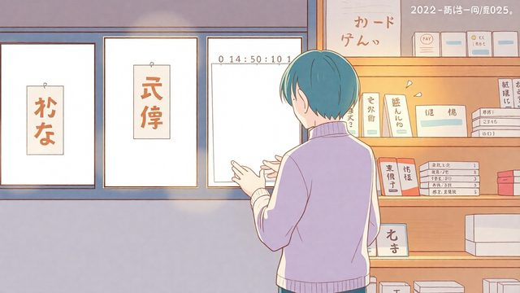
CH13-004
一日を終える区切り
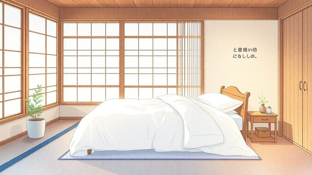
CH13-004
全てを置いて休む
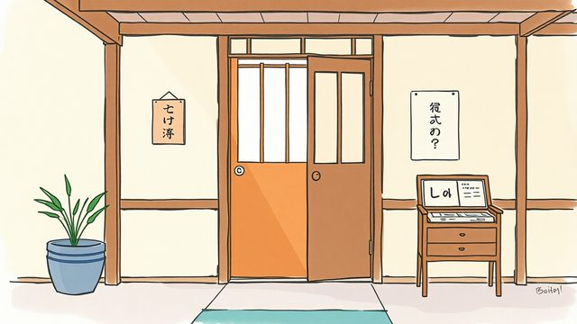
CH13-004
区切りを作る重要性／心の筋トレの続け方
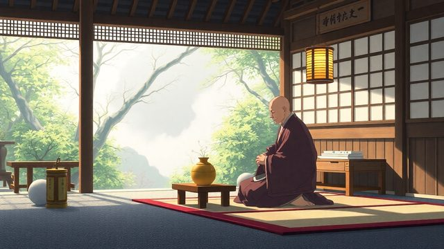
CH13-004
小さな繰り返しの効果／習慣がもたらす変化
CH13-004
断ると孤立する不安
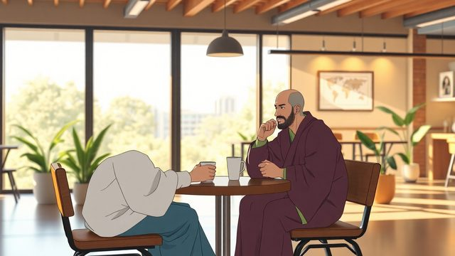
CH13-004
軽やかな関係を築く
CH13-004
エネルギーを注ぐ選別
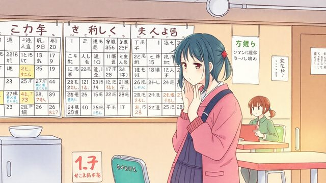
CH13-004
義務参加で疲れる重荷／選んで参加し関係が軽く
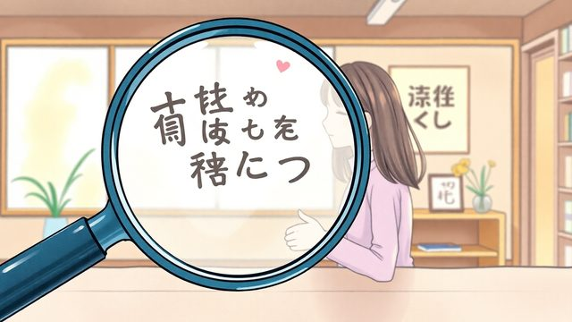
CH13-004
関係の質を見直す作業
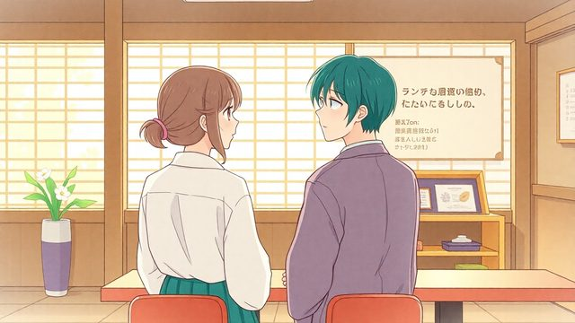
CH13-004
無理のない誠実な関わり
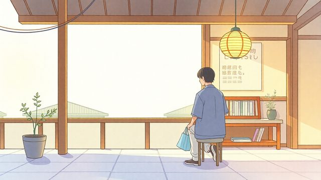
CH13-004
小さな選択の積み重ね
CH13-004
心が軽くなる未来
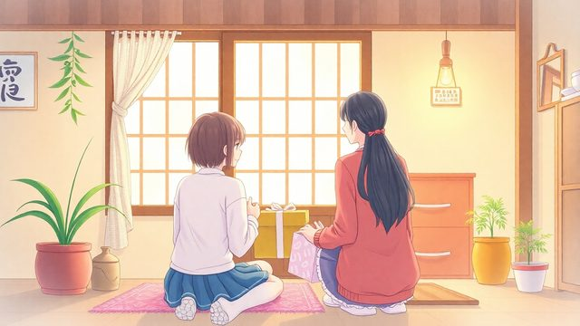
CH13-004
温かな繋がりと実践回顧
CH13-004
自他を守る技術で締め
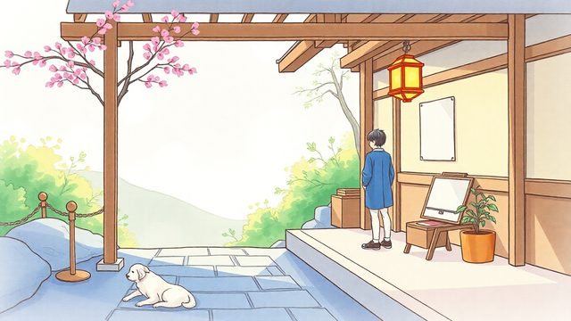
CH13-004
今日から始められる一歩／心を軽くする願い